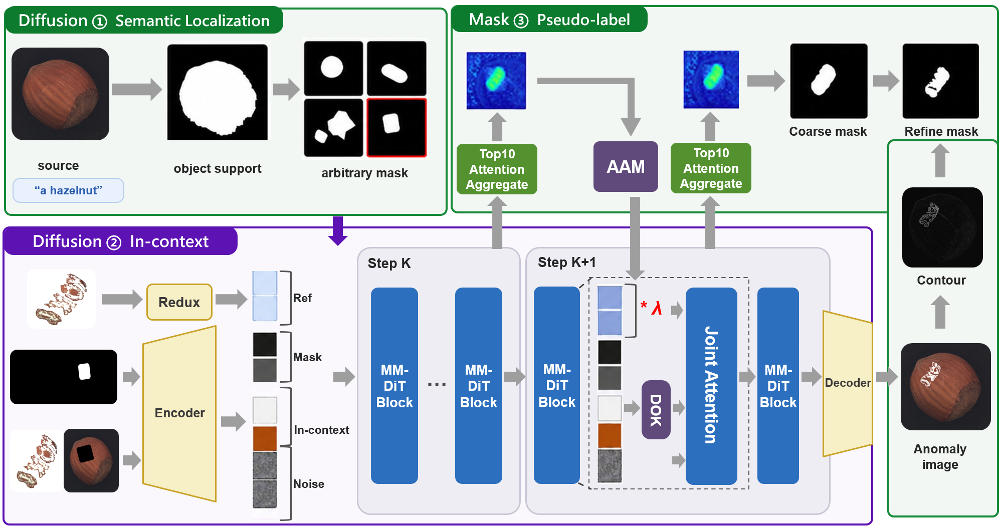
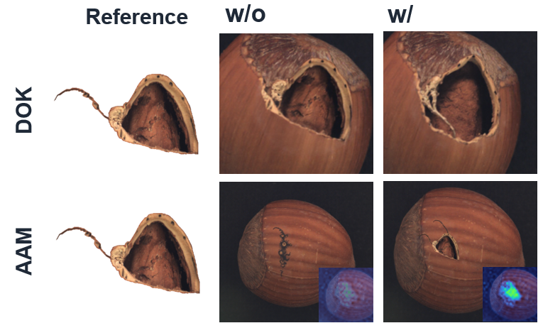
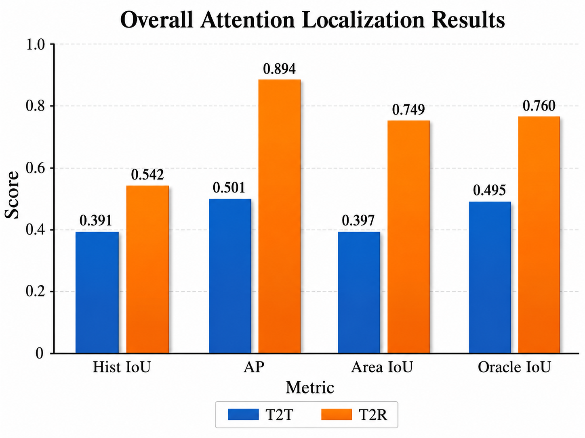
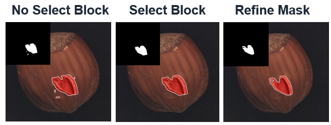
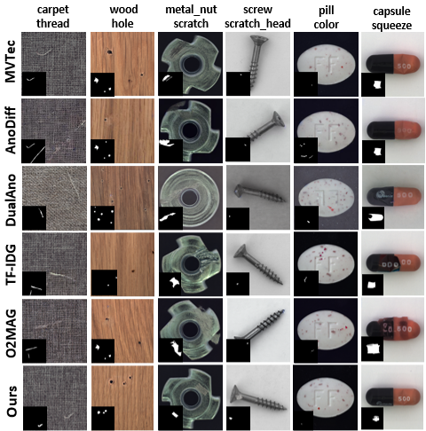
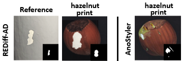

Industrial anomaly detection is challenged by the scarcity and diversity of real defects, leaving insufficient anomalous data to effectively train downstream models. Existing anomaly generation methods often require product-specific fine-tuning, target mask annotation, or costly procedures to achieve realistic and diverse defects. We propose REDiff-AD, a framework that requires neither model training nor target masks and introduces Rectified Flow MMDiT into industrial anomaly generation for efficient sampling with fewer generation steps. Given a normal product image and a single masked reference anomaly, REDiff-AD employs in-context learning to transfer the defect appearance from the reference onto the normal image. Internal attention signals generated during this process are further reused to localize the synthesized anomaly, while edge and color cues refine the localization into pixel-level pseudo-masks. Two lightweight modules further improve generation quality: adaptive reference conditioning enhances defect fidelity, while diversity guidance promotes varied defect patterns without additional training. Experiments on MVTec-AD demonstrate a strong tradeoff between realism and diversity, together with competitive downstream anomaly classification, detection, and localization performance.

Overview of REDiff-AD. Semantic localization first defines a loose editable region on the target. A frozen in-context MMDiT transfers the masked reference, with AAM strengthening weak anomalies and DOK reducing reference-shape copying. Aggregated target-to-reference attention is then refined into the output pseudo-mask.
Diversity Orthogonal K (DOK) relaxes the reference shape direction in Key space without discarding the appearance carried by Value features, promoting varied defect shapes. Attention Adaptive Module (AAM) uses stepwise attention feedback to strengthen reference conditioning only when defect formation is insufficient, improving robustness for small defects.

We compare target-to-target (T2T) and target-to-reference (T2R) responses over all 57 FLUX.1 Fill blocks and find that T2R provides clearer defect–background separation. Nine of the ten selected expert blocks belong to the single-stream stage.

T2R achieves higher localization scores across all metrics.

Selected blocks produce cleaner coarse masks; pixel-level refinement recovers precise boundaries.
Hover over any Reference or Ours image to switch it to the corresponding mask. Move the pointer away to return to the image; on touch devices, tap to toggle. All generated images shown below are produced by REDiff-AD (Ours) across all 15 MVTec-AD products and 73 defect types.
Image mask
We evaluate on all 15 categories of MVTec-AD. Training-based methods can introduce appearance distortion, while target-mask-dependent training-free methods may place defects outside the product region. REDiff-AD generates diverse defects while preserving the target product appearance.

REDiff-AD achieves the lowest average KID (31.09) while maintaining competitive diversity (IC-LPIPS 0.30), demonstrating a strong realism–diversity balance.
| Method | Training | Target Mask | KID ↓ | IC-LPIPS ↑ |
|---|---|---|---|---|
| AnomalyDiffusion | Yes | Yes | 101.91 | 0.30 |
| DualAnoDiff | Yes | Yes | 114.73 | 0.39 |
| TF-IDG | No | Yes | 32.38 | 0.28 |
| O2MAG | No | Yes | 47.63 | 0.29 |
| REDiff-AD (Ours) | No | No | 31.09 | 0.30 |
REDiff-AD achieves the best average AP-I (99.4) among all methods and competitive pixel-level localization performance, without fine-tuning or precise target masks.
| Method | AP-I ↑ | AUC-P ↑ | AP-P ↑ | F1-P ↑ |
|---|---|---|---|---|
| AnomalyDiffusion | 98.8 | 98.5 | 80.1 | 75.2 |
| DualAnoDiff | 97.2 | 98.4 | 77.5 | 73.5 |
| TF-IDG | 98.6 | 98.0 | 75.4 | 72.1 |
| O2MAG | 98.6 | 97.9 | 76.6 | 72.8 |
| REDiff-AD (Ours) | 99.4 | 98.0 | 77.8 | 74.1 |
With INT4-quantized FLUX.1 Fill and lightweight modules, REDiff-AD takes only 10s at 20 steps with 9 GB peak VRAM—below TF-IDG (22 GB) and O2MAG (16 GB)—supporting large-scale generation on consumer-grade GPUs.
| Method | Time (s/img) | Peak VRAM | KID ↓ |
|---|---|---|---|
| TF-IDG | 22 s | 22 GB | 8.62 |
| O2MAG | 20 s | 16 GB | 9.74 |
| REDiff-AD (20 steps) | 10 s | 9 GB | 9.26 |
| REDiff-AD (30 steps) | 16 s | 9 GB | 8.87 |
| REDiff-AD (40 steps) | 22 s | 9 GB | 8.53 |
| In-context | AAM | DOK | KID ↓ | IC-LPIPS ↑ | Acc. ↑ | AP-I ↑ |
|---|---|---|---|---|---|---|
| ✓ | 35.62 | 0.28 | 61.07 | 97.5 | ||
| ✓ | ✓ | 28.92 | 0.27 | 67.91 | 98.6 | |
| ✓ | ✓ | 32.04 | 0.30 | 63.31 | 98.1 | |
| ✓ | ✓ | ✓ | 31.09 | 0.30 | 70.77 | 99.4 |
| Metric | ROI only | No block selection | Selected blocks | Refined mask |
|---|---|---|---|---|
| AUC-P | 95.43 | 96.48 | 97.15 | 98.03 |
| AP-P | 69.98 | 70.16 | 72.82 | 77.82 |
| F1-P | 67.73 | 67.85 | 70.24 | 74.05 |
REDiff-AD also supports zero-shot generation by replacing the real anomaly reference with an ordinary everyday image. A single visual reference is sufficient to generate diverse anomalies without additional training or target masks.

| Method | KID ↓ | IC-L ↑ | AP-I | AUC-P | AP-P | F1-P |
|---|---|---|---|---|---|---|
| AnoStyler | 96.48 | 0.07 | 94.63 | 97.17 | 66.02 | 61.94 |
| REDiff-AD | 38.54 | 0.32 | 95.54 | 97.31 | 66.13 | 70.72 |